Part 1: Defining Correspondences
We define the Correspondences points between my image to the target image which is the portrait of George using the tool from last year. I did have to cropped and rescaled myself a little bit. At the end I used 43 points to correspond between Georege and my face. Finally, I then generated the Delaunay triangulations of the mean of the two sets of the Correspondences points using the Delaunay function. First we show the result of the raw of image of me and georege first then we show the result with the triangulations.

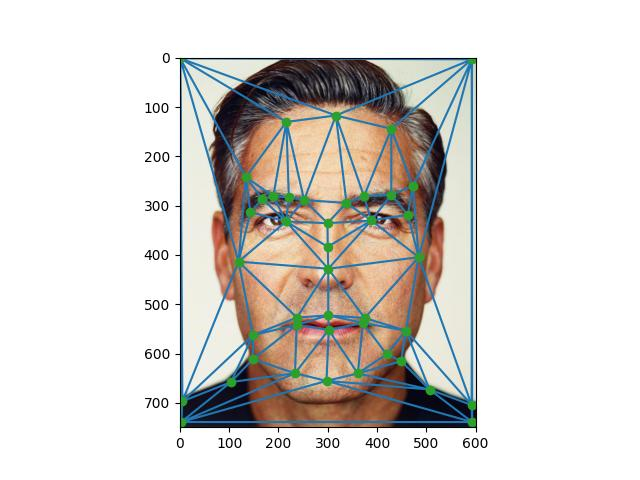
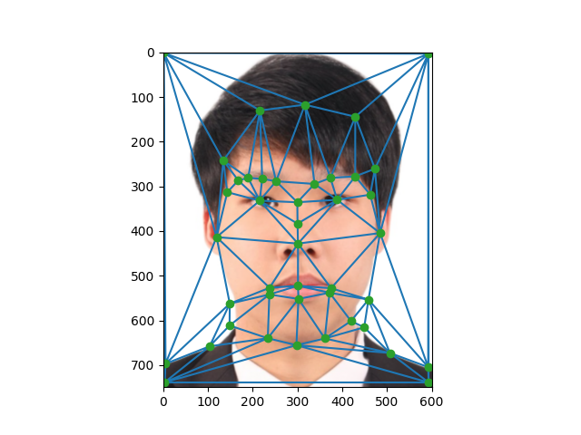
Part 2: Computing the "Mid-way Face"
Now to compute the mid-way face for the two images, I used the following steps 1. We first compute the average shape from the two set of Correspondences points (which is something that I already did in previous part). 2. Then we compute the affine transformation matrix taht can warp the triangle from the Georege image to the corresponding triangle which is the midpoint shape and we also do that for Tam image as well. We then compute the inverse of these affine matrix to warp the midpoint shape to the original shape of Georege and Tam this is done. Then 3. Finally, we did the cross-disolve by averging the warped images of Georege and Tam.
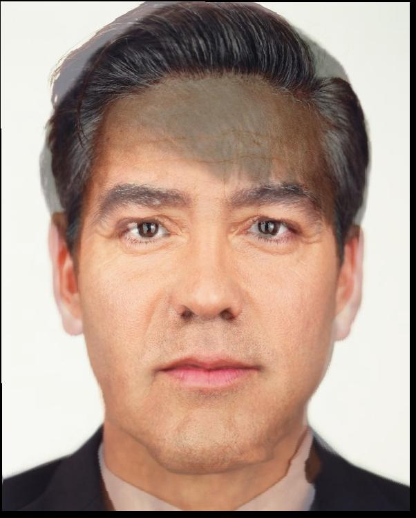
Part 3: The Morph Sequence
We then applied the morphing algorithm to generate the morph sequence. We generate 45 frames of the morph with 30 fps and then save it as a gif file.

Part 4: The "Mean face" of a Population
I decided to use the Danes dataset and computed the average face shape of the whole population by computing the corresponding points that I extracted from the .asf file. Then I warped each of the faces in the dataset to the average face shaoe and also get the average of the warped images as well.
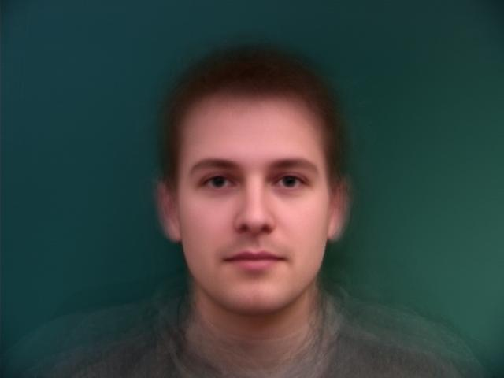
We then apply this to my image and show the image from me to average face of the Danes dataset and from the average face of the Danes dataset to me
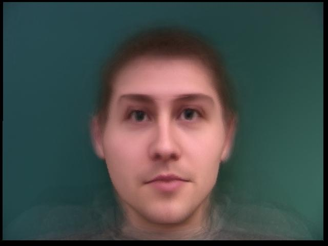
Part 5: Caricatures
We then apply the caricature by extrapolating from the population mean in the previous part. We use 4 different values of alpha to generate the caricatures which were -0.5, 0, 0.5, and 1.1.
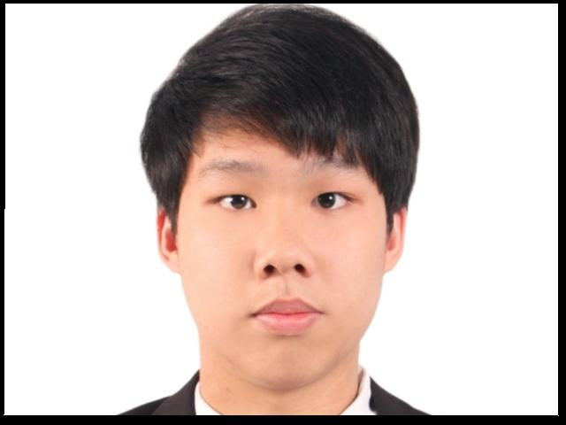
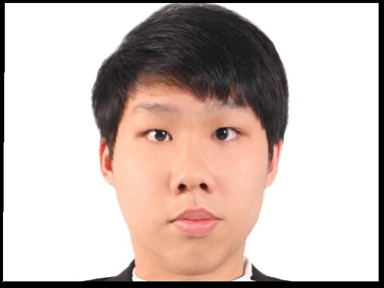
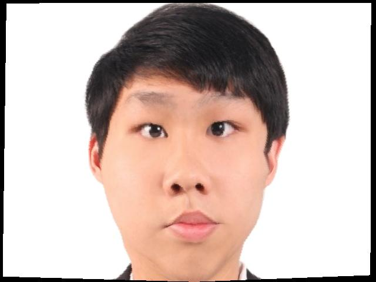
Part 6: Bells and Whistles
We try to change the gender of me using the Thai Female dataset. We first find the average of Female Thai dataset and then warp my image to the average of Thai Female. I also did the opposite that is cross-disolve from the average of Female Thai to me. At the end I also did the mid image of me and the average of Thai Female.
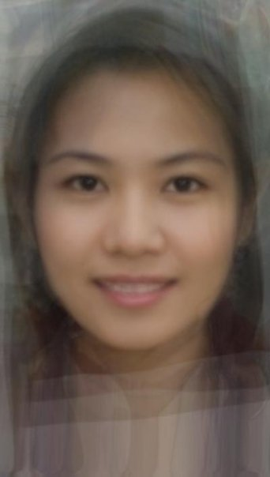
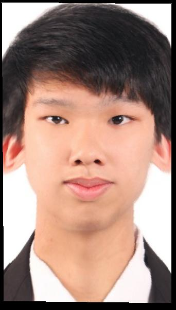
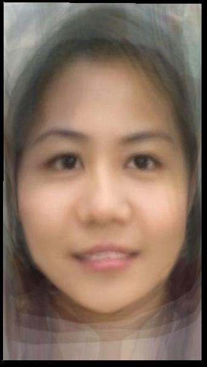
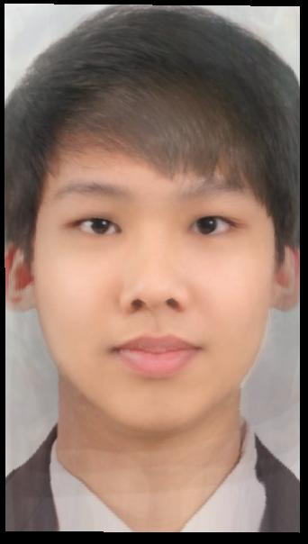